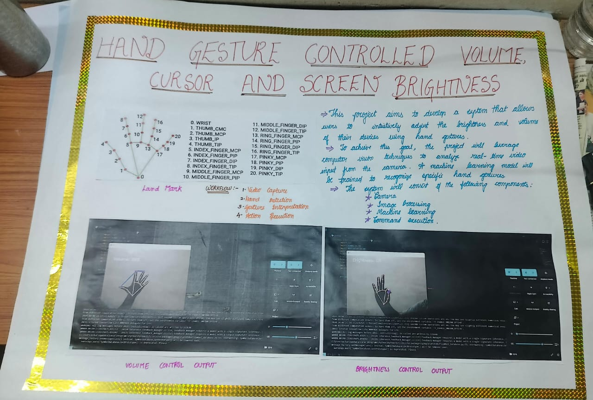

BOTTOM
Hyperlinks are used by the web browser to move from one page to another or even to move within the same page
HyperLink : Absolute URL
visit Google
HyperLink : Relative URL
Visit 1st Program
Image
Image : With HyperLink

File
IV-Report
Going TOP
TOP